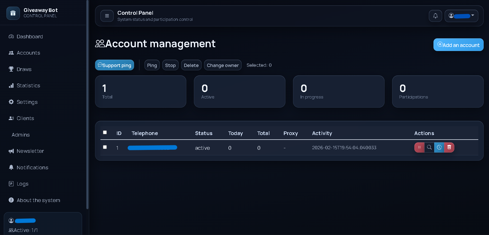
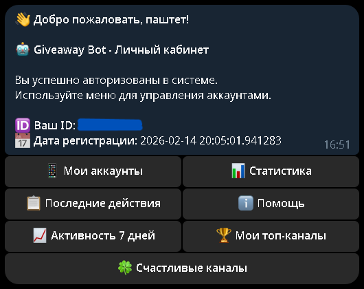
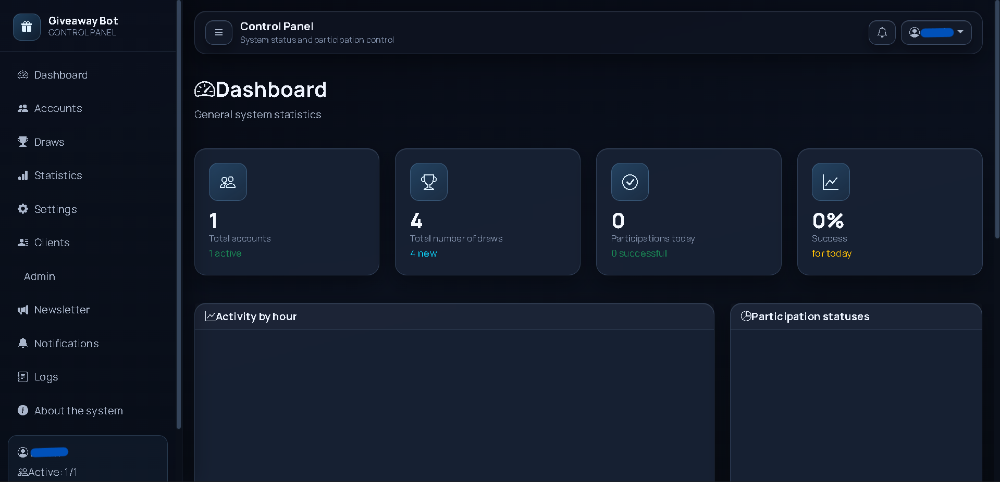

Problem
The hard part of this project was not sending commands to Telegram, but coordinating many accounts, permissions, admin visibility, and automation rules without turning the system into chaos or exposing sensitive account data.
Case Study
Integrated Telegram account management system: website admin panel, automated bot, access control and analytics in one product.
Bot → Backend → Database → Admin Panel
Users, accounts, statistics, and logs. Status is saved upon restart, analytics and export are available.
Adding, editing, and deleting users/accounts, managing bot actions and access.
Tables, cards, filtering, activity visualization, hover effects, and adaptive navigation.


